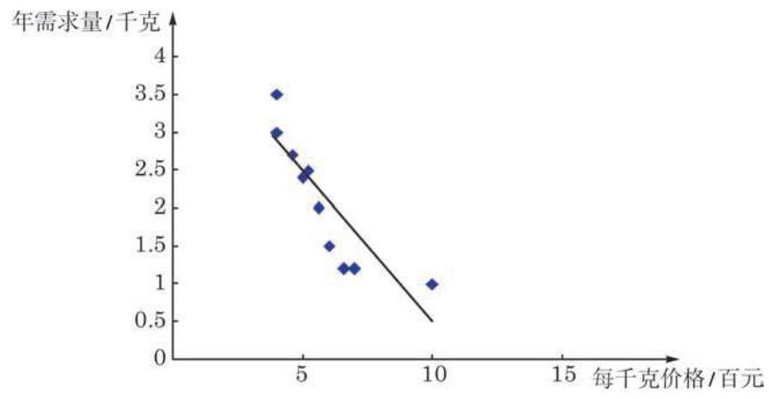
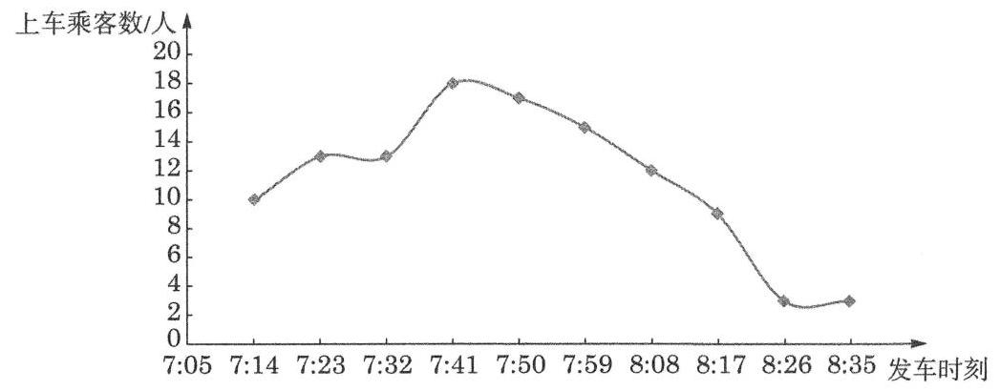
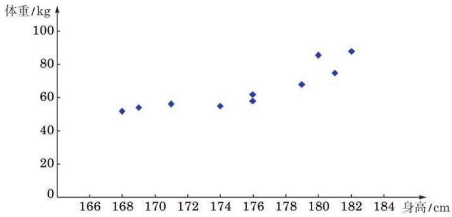
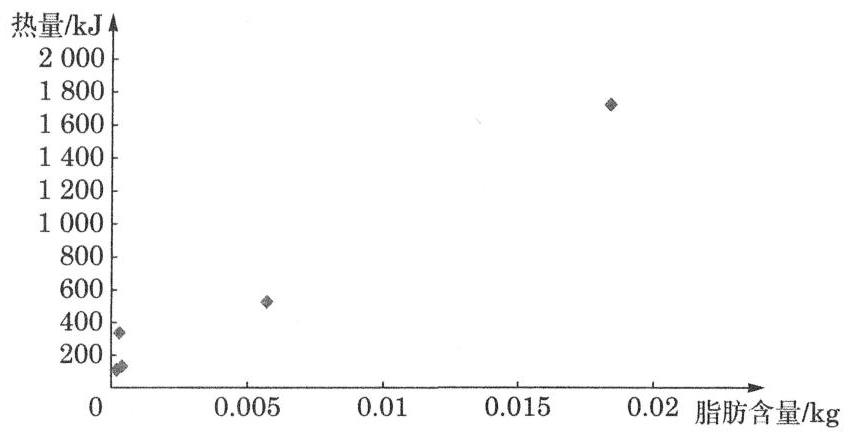
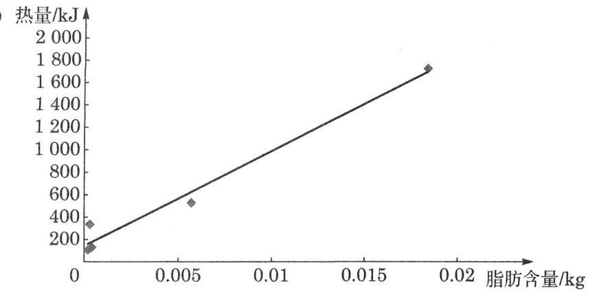

成对数据的统计分析
在必修课程第 13 章“统计”中，我们主要研究了来自单一变量数据的一些统计特征, 如集中趋势、离散程度、分布等. 但现实世界中许多事物和现象之间都是有联系的. 在本章中， 我们将主要学习来自两个变量的成对数据的相关分析和回归分析, 掌握它们之间的统计规律.
本章将要学习的相关分析、回归分析及 检验都属于推断性统计方法, 它们在构建统计模型、预测结果和因果分析等方面有许多应用.
在必修课程中学过的散点图是进行成对数据统计分析的基础, 通过观察散点图可以大致了解数据的整体形态和偏离情况, 发现两组数据之间的变化规律，构建适当的统计模型. 统计图表不仅可以直观地表示数据及其规律，也是建立统计直觉的重要途径.
1 成对数据间的关系
在必修课程第 13 章中, 我们曾经用散点图观察两个变量之间的相关性. 例如, 我们分别讨论了钻石价格与质量、颜色之间的关系.
下面再来看一个例子.
例题 1
例 1 通过随机抽样, 我们获得某种商品每千克价格 (单位:百元)与该商品消费者年需求量(单位:千克)的一组调查数据, 如表 8-1 所示.
表 8-1 消费者年需求量与商品每千克价格
| 每千克价格/百元 | 4.0 | 4.0 | 4.6 | 5.0 | 5.2 | 5.6 | 6.0 | 6.6 | 7.0 | 10.0 |
| 年需求量/千克 | 3.5 | 3.0 | 2.7 | 2.4 | 2.5 | 2.0 | 1.5 | 1.2 | 1.2 | 1.0 |
请绘制上述数据的散点图，并依据散点图观察两组数据的相关性.
答案与解析收起 / 展开
解 由于这两组数据分别来自同一商品的两个变量: “每千克价格”与“年需求量”，因此来自这两个变量的两组数据可以看作成对数据. 把“每千克价格”作为横坐标(自变量)，“年需求量” 作为纵坐标 (因变量), 在平面直角坐标系中绘制相应的点, 就得到年需求量和每千克价格的散点图 (图 8-1-1).

图 8-1-1 消费者年需求量与商品每千克价格的散点图
散点图中的点和必修课程第 13 章中一样, 用小方块 “●”或 “ ”表示.
从图 8-1-1 可以看出, 消费者对该商品的年需求量大体上随着价格的上升而减少，但也有一些例外的情况. 例如，价格都是 4 百元, 但不同年份的需求量分别是 3.5 千克和 3 千克, 说明在价格不变的情况下，需求量仍可能发生变化. 类似地，价格改变, 需求也可能基本不变.
对例 1 所示的散点图, 从整体上看, 所有点都在一条直线的附近波动, 在这种情况下, 我们说两个变量之间具有一种线性相关关系. 此时可以用一条直线来拟合这两组数据(图 8-1-1).
练习 8.1(1)
练习8.1(1) · 1
- 若已知下列各组数据，它们是否可以看作成对数据？是否可以进行相关分析？判断并简要说明理由.
(1)A 校学生的身高与 B 校学生的体重；
(2)人体内的脂肪含量与体重；
(3)某班学生的物理成绩与数学成绩.
答案与解析收起 / 展开
1.(1)因为不是来自同一对象的两组数据,所以不能看作成对数据,不能进行相关分析.
(2)一个人体内的脂肪含量与这个人的体重可以看作成对数据,能够进行相关分析.
(3)一个班级学生的物理成绩和数学成绩可以看作成对数据,能够进行相关分析.
练习8.1(1) · 2
2.《国家学生体质健康标准(2014 年修订)》中，体能监测包含身高、体重、肺活量、 50 米跑、坐位体前屈、引体向上(女:仰卧起坐)、立定跳远、1000 米跑(女:800 米跑)， 据此得到的每项指标都可以按照相应的单项指标评分表进行测量和计分，分别得到相应的数据.
(1)这些数据中的任意两组是否都可以作为成对数据进行相关分析？
(2)依据你的经验，哪两组数据的相关程度可能最高？哪两组数据的相关程度可能最低? 如何通过统计方法检验你的判断?
答案与解析收起 / 展开
练习8.1(1) · 3
3.某市 104 路公交车上午 7:05-8:55 时段在起点站每 9 分钟发一班次. 公交公司为了了解早高峰时段各班次上客情况, 某日上午 7:14-8:35 记录了在起点站各班次车辆上客的人数:
| 发车时刻 | 7:14 | 7:23 | 7:32 | 7:41 | 7:50 | 7:59 | 8:08 | 8:17 | 8:26 | 8:35 |
| 上车乘客数/人 | 10 | 13 | 13 | 18 | 17 | 15 | 12 | 9 | 3 | 3 |
请绘制这组成对数据的散点图, 并通过观察散点图大致判断客车发车时刻与上车乘客人数之间的相关性.
答案与解析收起 / 展开
- 发车时刻与上车乘客人数之间的关系是:开始记录的时候,上车乘客人数总体上是逐步增加的, 最多时达到 18 人,发生在第 4 次记录,随后上车乘客人数开始逐步下降. 从散点图来看, 近似呈抛物线形相关趋势.

2 相关系数
从本节例 1 可以看出, 一些成对数据具有明显的相关性, 且在绘制出散点图后可以用一条直线进行拟合, 也就是说具有线性相关性. 在这种情况下, 我们如何进一步描述成对数据的线性相关程度呢?
设由变量 和 获得的两组数据分别为 和 , n), 其对应关系如表 8-2 所示.
表 8-2
①
其中, ,它们分别是这两组数据的算术平均数.
不等式 的证明不作要求, 本节的课后阅读“相关系数的几何意义”将给出直观的解释.
可以证明,相关系数 的值满足 越接近 1,两个变量的线性相关程度越高; 越接近 0,两个变量的线性相关程度越低. 时,当 的值由小变大, 的值具有由小变大的变化趋势,称这种相关为正相关; 时,当 的值由小变大, 的值具有由大变小的变化趋势,称这种相关为负相关.
相关系数 描述的是两个变量之间线性关系的方向与程度, 是一种定量分析的方法. 相关系数具有以下特点:
(1)相关系数的计算公式关于 和 这两个变量是对称的. 画散点图时, 不论以哪个变量作为横轴 (纵轴), 所得的相关系数都一样.
(2)两个变量的相关系数与这两个变量的单位无关. 例如， 在计算身高与体重的相关系数时, 身高单位不管取 “米”还是 “厘米”, 相关系数的结果都一样.
(3)与平均数和标准差一样，相关系数不仅会受到数据量多少的影响, 也会受到少数异常值较大的影响.
例题 · 2
例 2 为了解某市高中男生身高与体重的关系，随机抽取 5 所高中学校, 并获得这些学校全部男生的身高 (单位: cm) 与体重(单位:kg)的数据. 为了减少篇幅，从中随机选取 10 名高中男生的身高与体重的数据，如表 8-3 所示. 试根据表中数据绘制散点图, 计算相关系数并判断学生身高与体重的相关程度.
表 8-3 10 名高中男生的身高与体重
| 编号 | 1 | 2 | 3 | 4 | 5 | 6 | 7 | 8 | 9 | 10 |
| 身高/cm | 174 | 176 | 176 | 181 | 182 | 179 | 169 | 168 | 171 | 180 |
| 体重/kg | 55 | 58 | 62 | 74 | 88 | 68 | 54 | 52 | 56 | 86 |
答案与解析收起 / 展开
解 将表 8-3 中的数据输入计算机电子表格办公软件的工作簿， 先选中身高与体重两行(或两列)数据，再选择插入统计图中的散点图, 选择图形样式, 就完成了散点图的绘制, 如图 8-1-2 所示.

图 8-1-2 10 名高中男生身高与体重的散点图
用相关系数来描述两个随机变量的相关性, 一般要求这两个变量均满足正态分布.
在本例中，若删去一组数据 , 则相关系数变为 0.844; 若样本数据中身高为 的学生体重为 ,则相关系数变为 0.684 .
从图 8-1-2 中可以看出, 总体上来说, 样本学生的身高和体重之间具有明显的相关性, 个子高的学生往往更重一些.
用计算机或计算器算得数值的小数位数较多, 在统计应用中可根据需要进行取舍.
为了计算相关系数, 我们把表中的两组数据代入本节公式 ①，通过计算机或计算器算得 . 这说明样本学生的身高与体重之间具有很高的相关性.
练习 8.1(2)
练习8.1(2) · 1
- 用经过匿名处理的本班同学最近一次期中或期末测验的各科成绩表，考察不同科目测验成绩之间的相关性.
答案与解析收起 / 展开
- 提示: 对自己收集到的部分同学的某两科成绩计算相关系数.
练习8.1(2) · 2
- 为了研究豆类脂肪含量与其产生的热量的关系, 选取了 5 种豆类进行实验测定. 下面是 豆类中脂肪含量 (单位: ) 与相应热量 (单位: ) 的对照表.
| 豆类 | 黄豆 | 豇豆 | 青毛豆 | 豌豆(鲜) | 四季豆 |
| 脂肪含量/kg | 0.0184 | 0.000 2 | 0.0057 | 0.000 3 | 0.000 4 |
| 热量/kJ | 1726 | 108 | 527 | 336 | 130 |
(1)根据表中的数据绘制散点图；
(2)观察散点图的趋势，如果能看成线性关系，请在图中画出一条直线来近似地表示这种关系, 并计算豆类脂肪含量与热量的相关系数.
答案与解析收起 / 展开
2.(1)热量/kJ


相关系数为 0.988 .
习题 8.1
A 组
习题8.1A · 1
- 计算例 1 中商品每千克价格与年需求量之间的相关系数.
答案与解析收起 / 展开
习题8.1A · 2
- 必修课程第 13 章中曾给出 A 校 66 名高一年级学生身高(单位:cm) 与体重(单位: kg)的数据，见下表. 试计算它们的相关系数.
| 性别 | 身高/cm | 体重/kg | 性别 | 身高/cm | 体重/kg | 性别 | 身高/cm | 体重/kg |
| 女 | 152 | 46 | 女 | 164 | 52 | 男 | 172 | 92 |
| 女 | 153 | 47 | 男 | 165 | 54 | 男 | 172 | 64 |
| 女 | 154 | 63 | 男 | 165 | 60 | 女 | 172 | 69 |
| 女 | 155 | 50 | 男 | 165 | 48 | 男 | 173 | 75 |
|
| 女 | 156 | 48 | 女 | 165 | 51 | 男 | 173 | 72 |
| 女 | 156 | 50 | 女 | 165 | 55 | 男 | 174 | 55 |
| 女 | 156 | 51 | 女 | 165 | 58 | 男 | 174 | 56 |
| 女 | 157 | 51 | 女 | 165 | 63 | 男 | 174 | 63 |
| 女 | 157 | 50 | 男 | 166 | 64 | 男 | 174 | 74 |
| 女 | 159 | 49 | 男 | 167 | 54 | 男 | 175 | 53 |
| 女 | 159 | 51 | 男 | 167 | 52 | 男 | 176 | 64 |
| 女 | 160 | 47 | 男 | 167 | 53 | 男 | 176 | 60 |
| 女 | 160 | 62 | 女 | 167 | 69 | 男 | 177 | 63 |
| 女 | 160 | 50 | 女 | 167 | 61 | 男 | 177 | 75 |
| 女 | 160 | 63 | 男 | 168 | 97 | 男 | 178 | 62 |
| 女 | 161 | 53 | 女 | 168 | 60 | 男 | 178 | 60 |
| 女 | 162 | 84 | 女 | 168 | 44 | 男 | 178 | 73 |
| 女 | 163 | 66 | 男 | 170 | 53 | 男 | 178 | 68 |
| 女 | 163 | 53 | 男 | 170 | 54 | 男 | 179 | 78 |
| 女 | 164 | 63 | 男 | 170 | 57 | 男 | 181 | 80 |
| 女 | 164 | 68 | 男 | 170 | 47 | 男 | 182 | 92 |
| 女 | 164 | 52 | 男 | 170 | 69 | 男 | 184 | 78 |
答案与解析收起 / 展开
习题8.1A · 3
- 某公司为研究工人操作熟练程度对产品合格率的影响, 随机抽取 15 名工人进行调查, 得到如下数据:
| 工人编号 | 1 | 2 | 3 | 4 | 5 | 6 | 7 | 8 |
| 操作熟练程度/% | 7.6 | 15.2 | 37.9 | 45.5 | 7.6 | 0.0 | 15.2 | 75.8 |
| 产品合格率/% | 50 | 55 | 68 | 75 | 52 | 30 | 55 | 90 |
| 工人编号 | 9 | 10 | 11 | 12 | 13 | 14 | 15 | / |
| 操作熟练程度/% | 90.9 | 60.6 | 7.6 | 15.2 | 37.9 | 45.5 | 98.5 | / |
| 产品合格率/% | 92 | 80 | 58 | 60 | 70 | 80 | 95 | / |
试计算工人操作熟练程度与产品合格率的相关系数.
答案与解析收起 / 展开
习题8.1A · 4
- 为判断能不能用气温推测海水表层温度, 收集了某沿海地区的气温和海水表层温度 (单位:℃)的统计数据，如下表所示.
| 气温/℃ | 海水表层温度/℃ | 气温/℃ | 海水表层温度/℃ |
| 13.9 | 9.4 | 31.1 | 28.3 |
| 15.0 | 10.6 | 31.1 | 26.7 |
| 18.3 | 13.3 | 28.9 | 25.0 |
| 23.9 | 18.9 | 23.9 | 22.2 |
| 27.2 | 21.7 | 20.0 | 15.6 |
| 30.0 | 25.6 | 15.0 | 10.0 |
试计算气温与海水表层温度的相关系数.
答案与解析收起 / 展开
B 组
习题8.1B · 1
- 如果两种证券在一段时间内收益数据的相关系数为正数, 那么表明 ( )
A. 两种证券的收益之间存在完全同向的联动关系, 即同时涨或同时跌;
B. 两种证券的收益之间存在完全反向的联动关系, 即涨或跌是相反的;
C. 两种证券的收益有同向变动的倾向;
D. 两种证券的收益有反向变动的倾向.
答案与解析收起 / 展开
习题8.1B · 2
- 据说职工迟到的频率与其居住地离上班地点的远近有关. 为验证这个说法, 一位社会学家随机抽取 10 名职工进行了调查, 其调查数据如下表所示.
| 职工编号 | 年迟到次数/次 | 住地远近/km | 职工编号 | 年迟到次数/次 | 住地远近/km |
| 1 | 8 | 1.1 | 6 | 3 | 10.1 |
| 2 | 5 | 2.9 | 7 | 5 | 12.0 |
| 3 | 8 | 4.0 | 8 | 2 | 14.3 |
| 4 | 7 | 5.9 | 9 | 4 | 14.1 |
| 5 | 6 | 8.2 | 10 | 2 | 7.8 |
试计算职工年迟到次数与住地远近之间的相关系数.
答案与解析收起 / 展开
习题8.1B · 3
- 下表是某国家由 18 支足球队参加的职业联赛(比赛采用双循环制，得分计算方法为:每场赛事胜方得 3 分，负方得 0 分，平局双方各得 1 分)的各队积分和射门次数，求这 18 支球队的积分与射门次数的相关系数.
| 足球队 | A | B | C | D | E | F | G | H | I |
| 积分 | 51 | 64 | 62 | 53 | 47 | 43 | 44 | 42 | 46 |
| 射门次数 | 418 | 509 | 485 | 425 | 452 | 425 | 393 | 350 | 375 |
| 足球队 | J | K | L | M | N | O | P | Q | R |
| 积分 | 43 | 50 | 35 | 40 | 40 | 32 | 41 | 26 | 32 |
| 射门次数 | 428 | 415 | 363 | 372 | 377 | 271 | 395 | 306 | 357 |
答案与解析收起 / 展开
课后阅读
相关系数的几何意义
观察相关系数 的计算公式
①
你是否觉得似曾相识?
从结构上看,这两个公式是一样的. 如果把两组数据 看作两个 维向量 ,并记由这两组数据的平均数构成的两个 维向量分别是 及 ,那么比较公式①和向量的夹角公式可以发现: ,这说明相关系数 其实就是两个向量 与 一 的夹角的余弦值. 余弦值越接近 1 或 -1，意味着这两个向量越接近平行，散点图中的点更多地落在同一条直线的附近, 说明这两组数据的变化方向接近相同或相反, 正相关或负相关的程度越高; 余弦值越接近 0 , 意味着这两个向量越接近垂直, 表示这两组数据的相关程度越低. 此外,两组数据 之所以分别减去各自的平均数,相应地得到差向量 一 与 一 ,从几何上看是在作一个平移变换,而用统计学的说法, 则相应于做了一个数据中心化的处理.